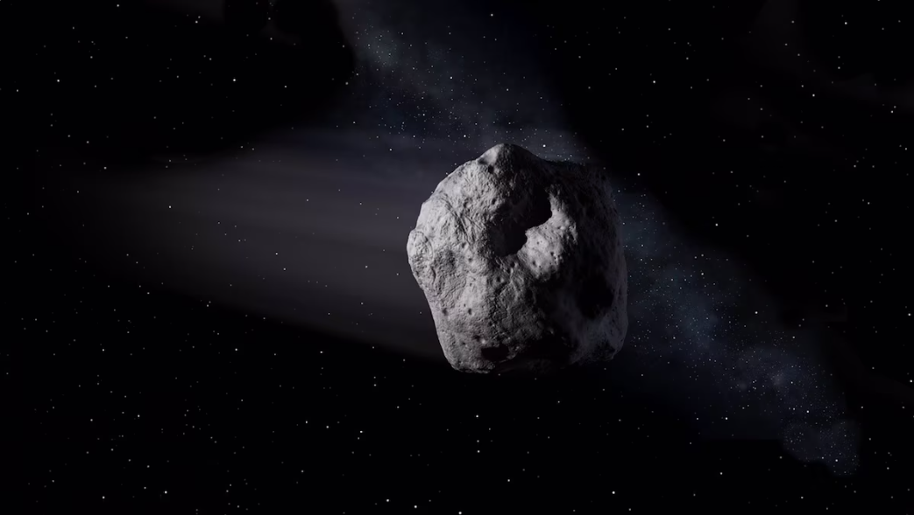

Bienvenido a El Faro Noticias, Mantente informado siempre con nosotros. Continua en tu seccion favorita.
Noticia de la semana.
El asteroide 2024 YR4, que amenazaba con chocar contra la Tierra, podría colisionar contra la Luna

Noticias Generales
Lobo marino presenta herida en el cuello por soga metálica
Generales
En la comuna de Talcahuano, región del Bío Bío, un lobo marino se encuentra herido producto de lo que sería un alambre a la altura del cuello.
De acuerdo con lo informado por auditores a Denuncias BBCL, el animal -que pesa cerca de 250 kilos- está en el sector La Poza de la mencionada comuna.
En este sentido, alertaron que el lobo marino tenía una soga de metal que le produjo una herida en la piel. Además, que el animal suele ubicarse en un punto concurrido por personas.
Por lo mismo, BioBioChile consultó a Sernapesca por el estado del animal y sobre si llevarán alguna acción para auxiliarlo.
“No es primera vez que se observa este tipo de casos, así dan cuenta los registros en las regiones de Bío Bío, Valdivia, Los Lagos, Antofagasta, Araucanía, Coquimbo, entre otros”, detallaron desde el servicio.
Además, la médico veterinaria Valeria Astorga, jefa(s) área acuicultura, conservación y biodiversidad, agregó que “este tipo de herida es fruto de la interacción de los lobos marinos con la actividad humana”.
De igual manera, respecto a la última denuncia que circula en redes sociales, desde Sernapesca indicaron que están en conocimiento y que diariamente se han realizado monitoreos. Lo anterior, dado que la presencia del animal es solo en momentos del día y en un lugar de difícil acceso, lo que hace complejo planificar un operativo.
PDI de Atacama encuentra con vida a joven que estuvo desaparecido durante tres días
Generales
La Brigada de Homicidios (BH) de la PDI de Copiapó, en la región de Atacama, logró ubicar a un joven de 20 años que se encontraba extraviado desde hace tres días.
La presunta desgracia había sido denunciada por su familia, quienes habían perdido todo tipo de contacto con el hombre que abandonó su hogar en Tierra Amarilla.
Al respecto, el subcomisario Eduardo Mora indicó que “oficiales policiales de la BH llevaron a cabo una serie de indagatorias en virtud de una denuncia cursada el pasado 24 de marzo en el cuartel PDI de Copiapó, la que daba cuenta de la desaparición de un joven de 20 años, con domicilio en la comuna de Tierra Amarilla”.
“El trabajo policial permitió determinar que la víctima dejó su vivienda y se dirigió hasta la comuna de Copiapó, donde se mantuvo pernoctando en un sitio eriazo ubicado en las cercanías del Parque Kaukari”, añadió.
Junto con ello, el funcionario sostuvo que las diligencias “investigativas permitieron establecer la ubicación de la víctima, quien se encontraba deambulando en las inmediaciones de la Segunda Subcomisaría de Carabineros de Copiapó”.
Tras dar con su ubicación, el joven fue llevado hasta el Hospital Regional de Copiapó para chequear su estado de salud y luego trasladado a su hogar para reunirse con su familia.
“Destacamos la colaboración y disposición de funcionarios de la Municipalidad de Tierra Amarilla, quienes rápidamente se pusieron a disposición de la labor policial, entregando una serie de insumos que fueron fundamentales para el éxito de las diligencias investigativas”, cerró Mora.
El "hombre araña" está de vuelta: revelan fecha de estreno de ’Spider-Man: A brand new day’
Generales
A casi cuatro años del estreno de ‘Spider Man: Sin camino a casa’, Sony Pictures prepara el debut en cines de la cuarta entrega de la ficción del héroe arácnido protagonizado por Tom Holland.
Así lo informaron en sus redes sociales, donde además revelaron el nombre que tendrá la nueva cinta, lo que dio pie a varios fanáticos a concluir de qué se tratará.
A casi cuatro años del estreno de ‘Spider Man: Sin camino a casa’, Sony Pictures prepara el debut en cines de la cuarta entrega de la ficción del héroe arácnido protagonizado por Tom Holland.
Así lo informaron en sus redes sociales, donde además revelaron el nombre que tendrá la nueva cinta, lo que dio pie a varios fanáticos a concluir de qué se tratará.
‘Spider Man: Un nuevo día’, será el nombre que llevará la nueva película, que dejará atrás el concepto “Home” que han usado en las últimas producciones.
La ficción llegará a los cines el 31 de julio de 2026 y aunque aún no se ha revelado el elenco que acompañará a Holland, ya han surgido rumores del supuesto fichaje de la estrella de ‘Stranger Things’, Sadie Sink.
Aunque no se ha dado a conocer qué papel interpretará la actriz, los personajes que se barajan serían una versión de Gwen Stacy o Jean Grey, la poderosa mutante Dark Phoenix de los X-Men.
De acuerdo a Cultura Ocio en esta entrega del comic, Peter Parker se muda solo a un departamento en Nueva York, luego de recuperar su identidad secreta, comenzando una nueva etapa en su vida.
Cabe recordar que en el final de ‘Sin camino a casa’, con la ayuda de Dr. Strange, la identidad del héroe arácnido es borrada de la civilización, por lo que ni Mary Jane (Zendaya) ni Ned (Jacob Batalon) lo recuerdan, lo que podría cambiar el curso de la historia.
Noticias Deportivas
Copa Sudamericana: Caracas remonta a Iquique con ráfaga de 4 minutos en el Tierra de Campeones
Deporte
Sufre el anfitrión. Deportes Iquique está cayendo 1-2 con Caracas FC en su primer duelo de la fase grupal de la Copa Sudamericana.
El conjunto nortino abrió la cuenta temprano, a los 4, gracias a un gol de penal de Edson Puch.
Sin embargo, a los 33, Ender Echeñique pudo emparejar la cuenta en el estadio Tierra de Campeones. Después, a los 37′, Aguilar puso la ventaja para los llaneros con un perfecto tiro libre.
UdeC y Colegio Los Leones aseguran playoffs y mantienen intensa lucha en el básquetbol chileno
Deporte
Tal como ha ocurrido en las últimas temporadas, Básquet UdeC y Colegio Los Leones de Quilpué protagonizan una intensa batalla por el primer lugar de la fase regular de la Liga Chery by Cecinas Llanquihue, serie de honor del básquetbol chileno.
Con diez semanas disputadas, solo un punto separa a ambos equipos en la tabla, y su enfrentamiento directo en las próximas jornadas definirá quién se quedará con la ventaja clave de localía en los playoffs.
Cristian Garin supera a Alexander Ritschard y comienza a paso firme en el ATP de Houston
Deporte
El tenista chileno Cristian Garin inició este lunes de la mejor manera su expedición por el ATP 250 de Houston. ‘Gago’, actual 133 del listado mundial, se impuso en sets consecutivos al suizo Alexander Ritschard, 125°. El oriundo de Arica se quedó con la victoria con parciales de 6-3 y 6-4, en una hora y cuarenta minutos de enfrentamiento.
Garin mostró un nivel notable y contó con un saque casi perfecto, con cinco aces. De hecho, el chileno no cedió opciones de quiebre a lo largo del partido. Además, el nacional registró un 87% de los puntos ganados con su primer servicio, y 70% con el segundo. Ahora, por los octavos de final, Cristian Garin se verá las caras con el principal candidato al título, el local Tommy Paul.
Noticias de Negocios
Salario vital" de $725 mil: Propuesta de la CUT que el Gobierno se abre a evaluar
Negocios
En diversas ocasiones la Central Unitaria de Trabajadores (CUT) ha hablado sobre el “salario vital”.
Se trata de una cifra, representativa de todos los ingresos de una familia y que pueda cubrir tanto necesidades básicas (alimentos, servicios básicos, educación) como también de ocio y otros aspectos ligados a la calidad de vida.
Ya tras la aprobación de la subida del sueldo mínimo a $500 mil, la CUT señalaba que un salario vital debía constituirse como una “política pública”. Ahora, como cifra, el ente gremial apunta a $725 mil líquidos para una familia de 4 personas, consigna Pulso.
La respuesta desde el Gobierno ha sido una apertura al análisis de la propuesta, afirmando que no necesariamente se trata de llegar a ese nivel de sueldo mínimo, sino de los ingresos en general que perciben las familias.
Forbes actualiza lista de millonarios: A Elon Musk nadie le gana y chilena Iris Fontbona en el Top 100
Negocios
El magnate tecnológico y mano derecha de la Administración de Donald Trump, Elon Musk, recuperó el título de la persona más rica del planeta gracias a una fortuna que asciende a 342.000 millones de dólares, según la Lista Forbes 2025 publicada este martes.
En el Top 100 figuró una mujer: la chilena Iris Fontbona.
Y mucho más abajo en el listado aparecieron otros cuatro chilenos: Julio Ponce Lerou (puesto 1.573), Roberto y Patricia Angelini Rossi (puestos 1.850 y 2.233, respectivamente) y Luis Yarur Rey (lugar número 2.479).
Fontbona, se detalló, posee 28.100 millones de dólares y es la única mujer latinoamericana en las primeras cien personas de la lista.
Podrán ganar más de $30 millones: Santander lanza reto global para innovaciones circulares
Negocios
Seis Startups y scaleups que propongan soluciones innovadoras de economía circular, de 11 países -incluyendo Chile- podrán participar por 30 mil euros (más de $30 millones de pesos chilenos), en el marco del programa Santander X Global Challenge | Circular Economy Revolution.
La iniciativa, impulsada por Banco Santander, se trata de un reto global ideado junto a las fundaciones Norrksen y Oxentia, dirigido a startups y scaleups de Alemania, Argentina, Brasil, Chile, EEUU, España, México, Portugal, Polonia, Reino Unido y Uruguay.
El objetivo de esta nueva iniciativa es contribuir a transformar el mundo optimizando el uso de recursos naturales, reduciendo la generación de residuos e impulsando la transición hacia un modelo económico circular, más eficiente, sostenible y respetuoso con el medio ambiente.